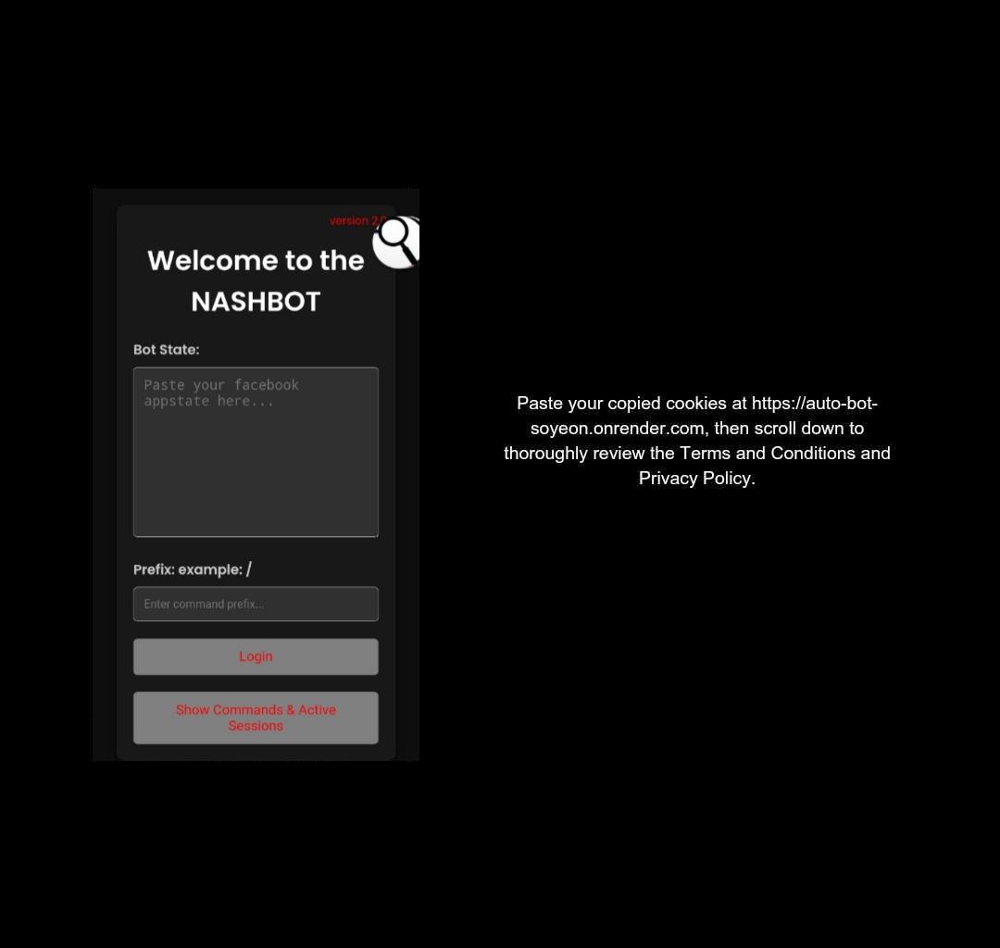

Step-By-Step Guide
1. Install the Kiwi Browser from the Google Play Store and proceed to launch the application.

2. Upon launching the app, navigate to the search function and enter the following link: https://github.com/c3cbot/c3c-fbstate/archive/refs/tags/1.5.zip

3. Once entered, a prompt will appear instructing you to download the file; proceed by clicking the download option.

4. After completing the download, tap the three dots in the upper-right corner, then select the "Extensions" option.

5. In the Extensions menu, enable Developer Mode, then click the "+" button to add the extension from either a zip file, crx file, or user.js file.

6. Locate the previously downloaded zip file and click on it to initiate the installation process.

7. Once the installation is complete, observe the C3C fbstate utility in the bottom-right corner and activate it by clicking on it.

8. Upon activation, navigate to Facebook.com using the Kiwi Browser and log in your account.

9. After logging in, access the menu by clicking the three dots in the upper right corner, scroll down, and locate the C3C fbstate utility.

10. You'll be redirected to another page; locate the "Copy Clipboard" option and click it to copy your cookies for further use.

11. Paste your copied cookies at https://auto-bot-soyeon.onrender.com, then scroll down to thoroughly review the Terms and Conditions and Privacy Policy.
12. Finally, having carefully reviewed the Terms and Conditions and Privacy Policy, check the box to confirm your understanding and submit the information.
13. Certainly, please input "ai" to confirm the bot's operational status. If it responds, congratulations on successful verification.

Note:
• In case the bot encounters a login issue during the initial log, it may be due to a lock. Simply unlock it and repeat the process.
• If the bot is already logged into Facebook/FB Lite, refrain from logging in on other devices or initiating a logout.
• While the bot is active, avoid logging into the bot account or changing the password.
• Please be aware that there is a possibility of encountering account locks or suspensions, and we are not responsible for such occurrences.
• Please be aware that there is a possibility of encountering account locks or suspensions, and we are not responsible for such occurrences.
To register another bot/Al, simply tap on "logout" (not die appstate) to acquire a new appstate for another account.

For further assistance or queries, feel free to reach out via email: joshuaapostol909@gmail.com